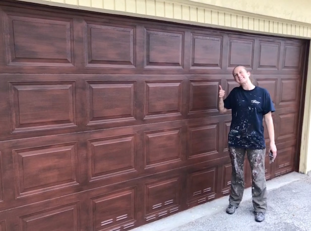
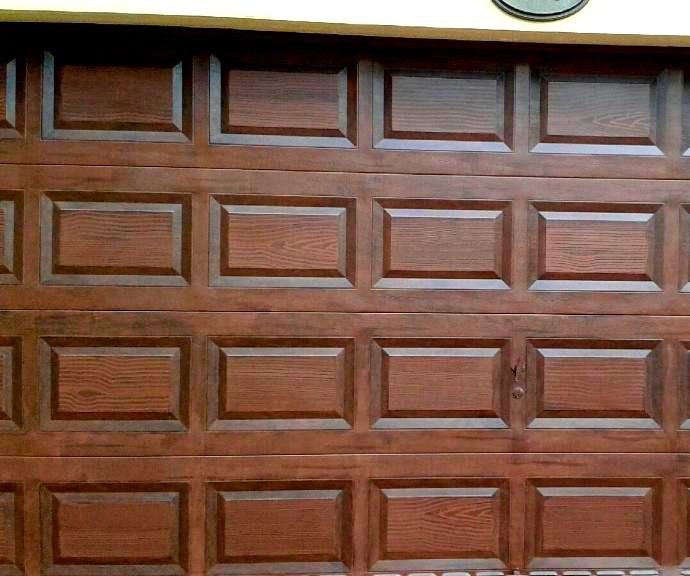
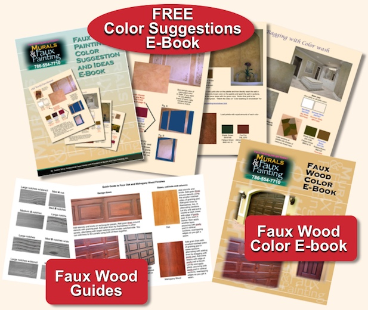
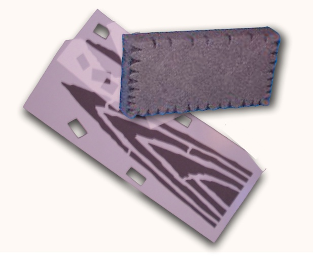
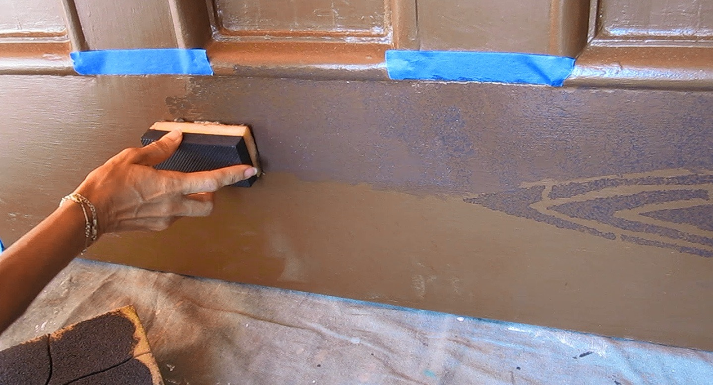

Painting surfaces to look like wood is not as difficult as it seems. Today, many doors, furniture and cabinets are not made of solid wood but they are made of veneers. Veneers are thin slices of real wood, usually cut from a log. One advantage to using them is that unattractive knots can be avoided when making doors for furniture or cabinets.
The same holds true when painting a faux wood finish. You decide where you want the grain lines and knots to appear. In some states, wooden garage doors are prohibited by building codes. Therefore, faux painting a wood finish is ideal.
The video above demostrates one type of wood that you can learn with the Triple S Faux System©. Using the same great tools that we use for other faux finishes, we can create the illusion of real wood doors and other surfaces.

Mahoganny is a finely grained wood. The grain lines are interlocking, therefore, they are not as distinct. This hardwood is the most popular for garage and front doors as it is usually darker in appearance. Since most homes are in the light or middle tones, having darker doors makes for better contrast and appeal. Teak and Beech wood are similar in that the grains are not very busy looking but the colors can be dark and middle toned as well.

Oak, Cherry and Walnut on the other hand, are more busier looking as they have grains that are more distinct. The colors used for Oak are in the honey tones, whereas Cherry is in the red tones and Walnut is more in the darker brown tones. These woods are popular in kitchen cabinetry because they tend to be lighter in color which keeps samller kitchens from looking too dark as well as adding interest with the distinct grain lines.
The great thing about faux finishing is that you are not limited to certain wood grain lines because you can always mix them up to how you want your faux wood to look. The same goes for the colors. You be the artist.
*Includes the Basic Kit, Faux Wood DVD, Graining pad, Stencils, Color Suggestions E-book and FREE Faux Wood Guides/Color E-file. The files will be emailed to you as soon as your order is shipped.




The most popular tool used to imitate grain lines is a rocker. However, after personal difficulties in manipulating this tool as well as not being able to use it in tight areas, we believe that using a stencil, with a wood graining pad is easier.
Therefore, we decided to develop these tools ourselves. Our wood graining pads have different notches on each side to achieve a variety of lines to imitate various wood grains. Together with our custom designed stencils, adding real looking grain lines is easy.

When using water based paints and glazes outside, your open time is usually limited due to the heat. Therefore, applying your top coat quickly is key to having enough time to manipulate it to get the desired results. With this system, you just load the Multi Color Faux Palette and use the Poofy Pad to pounce out your top coat on your surfaces. In addition, there is no need to buy special brushes. You can use the Poofy Pad to apply your stencils, too. In addition, the natural looking specks that most woods have is achieved with it, too.
The most popular colors used as a base coat for faux wood finishes on garage doors are dark red/orange or orange/brown tones. The top coat is either black, almost black or black brown mixed with a glaze. The most popular base coat for cabinets are mustard yellow or light beige colors. The top coat is either brown or golden brown tones mixed with a glaze. We have put together a pdf file that has our own formula for the most requested colors we have used. If someone orders our Faux Wood Combo kit, they will get the file attached in a email. You can also come back and add another layer of color around the frames to get a Two Toned look.
Your base coat should be a satin sheen. It's not possible to do a faux wood finish on an egg shell or flat sheened base coat because your glaze will dry almost immediately, making it impossible to add any wood grain lines.
If you would like to hire our company and see our ESTIMATED PRICES, click below Faux Painting Services or call 786-554-7710 for FREE ESTIMATES on the phone.

(This kit includes Basic, Faux Marble, Faux Wood Kit and tools for texturing)
*FREE Priority Shipping and Color Idea E-book